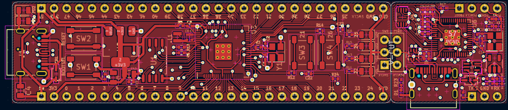
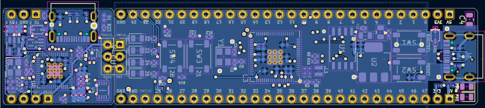
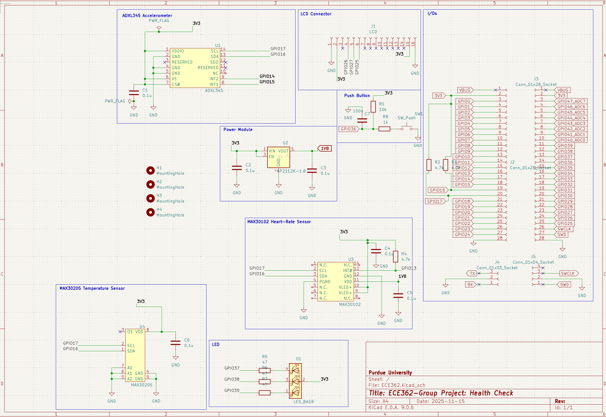
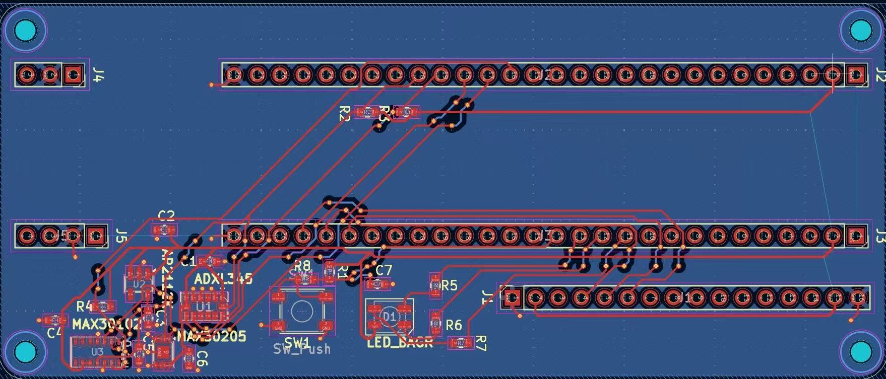

Health Checker Design and Assemble
Documented 12/27/2025This project is done under ECE362: Microprocessor Systems and Interfacing. This project used first half of content taught in the class. The other half mainly focused on assembly, single cycle processor, and hardware arithmetics.
Overview
This project is done with Purdue Proton Board, PCB layout of the Proton Board is below.
 The Health Checker is able to measure the health information, including walking steps, heart rate, body temperature, and is able to display the informatin through a tft screen. If heart rate or body temperature exceeds the healthy range, the alarm will be triggered.
Work
Here are the components we use:
- Body temperature sensor: MAX30205
- Heart rate sensor: MAX30102
- Accelerometer: AXDL345
- Power module: AP2112K-1.8
- A TFT display
- A LED
Here is the schematics, and PCB layout of the Health Checker.
 Here is a screenshot from the breadboard I tested on.